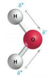
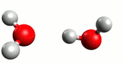

pH en Buffers
Het evenwicht in water en de invloed op pH en buffers.
Om te begrijpen wat de pH is en hoe buffers werken, zal er eerst naar het watermolekuul gekeken worden.
Watermolekuul
Een watermolekuul bestaat uit 2 atomen waterstof (H) en 1 atoom zuurstof (O):
\[\ce{H-O-H}\]
Deze deeltjes blijven bij elkaar door een zogenaamde atoombinding. Hierbij worden de atomen aan elkaar gebonden door een gemeenschappelijk electronenpaar. Bij het watermolekuul is dat wel een speciale atoombinding, namelijk een polaire atoombinding. Hierbij trekt het zuurstofatoom wat sterker aan de gemeenschappelijke electronen dan de waterstofatomen. Het gemeenschappelijke electronenpaar zit dan niet meer precies in het midden tussen de twee atomen. Daardoor wordt het zuurstofatoom iets negatief geladen en de waterstofatomen iets positief. Dit wordt ook wel een dipool genoemd. In de figuur wordt dat aangegeven met \(\delta ^+\) en \(\delta ^-\).Het symbool \(delta\) heeft hier de betekenis van ietsje.

Waterevenwicht
Zuiver water heeft een klein geleidingsvermogen voor electriciteit. Er moeten dus wat ionen in het water zitten. Dit komt doordat een klein gedeelte van de watermolekulen, ondanks de atoombindingen, in ionen gesplitst zijn.
Omdat de electronen zich dichter bij het zuurstof atoom bevinden kan een waterstofatoom als het ware loskomen van de rest van het molekuul en combineren met een ander watermolekuul om \(\ce{H3O+}\) te vormen

Je komt deze reactie In twee weergaven tegen:
\[ \ce{H2O + H2O <--> H3O+ + OH-} \]
\[ \ce{H2O <--> H+ + OH-} \]
Je kunt beide notaties gebruiken, maar in de praktijk zie je meestal de laatste.
Deze dissociatiereactie is omkeerbaar en bereikt een evenwicht dat afhankelijk is van de temperatuur. In de evenwichtstoestand veranderen de concentraties van de stoffen niet meer. De evenwichtsconstante \(\ce{K}\) kan geschreven worden als
\[ \ce{K = \frac{[H+]\cdot[OH-]}{[H2O]}} \]
Met blokhaken wordt de concentratie van een stof aangegeven, uitgedrukt in mol/liter (M, molair).
In verdunde oplossingen is de concentratie van water nagenoeg constant en ongeveer gelijk aan 1. Je kunt dan de evenwichtsvergelijking herschrijven als \[ \ce{[H+][OH-] = K \cdot [H2O]} = K_w \]
Bij 22oC is \(K_w = 1,0 \times 10^{-14}\) en bij 100oC is \(K_w = 58 \times 10^{-14}\).
In zuiver water of neutrale oplossing zijn de concentraties aan elkaar gelijk: \(\ce{[H+] = [OH-]} = 10^{-7}\) M (bij gewone temperatuur).
Maar oplossingen zijn niet altijd neutraal. Wanneer het ene ion toeneemt, moet het andere ion proportioneel afnemen, want \(K_w\) is immers constant. Bij 22oC geldt
- Neutrale oplossing: \(\ce{[H+]} = 10^{-7}\) M en \(\ce{[OH-]} = 10^{-7}\) M
- Zure oplossing: \(\ce{[H+]} > 10^{-7}\) M en \(\ce{[OH-]} < 10^{-7}\) M
- Basische oplossing: \(\ce{[H+]} < 10^{-7}\) M en \(\ce{[OH-]} > 10^{-7}\) M
pH
De waterstofionenconcentratie is voor tal van verschijnselen (o.a. de stofwisseling) van groot belang. In de praktijk gebruikt men niet de waterstofionenconcentratie zelf, maar de \(\ce{pH}\) welke gedefinieerd wordt als de negatieve logaritme van de \(\ce{H+}\) concentratie.
Kortweg: \(\ce{pH = - ^{10}log[H+]}\).
Bij 22oC geldt
- Neutrale oplossing: \(\ce{pH = - log(10^{-7}) = 7}\)
- Zure oplossing: \(\ce{pH < 7}\)
- Basische oplossing: \(\ce{pH > 7}\)
Een \(\ce{H+}\) ion wordt ook wel een proton genoemd.
Een zuur is een verbinding die een proton kan afstaan.
Een base is een verbinding die een proton kan opnemen.
Bij 100oC is \(K_w = 58 \cdot 10^{-14}\) en is dus \(\ce{[H+] = [OH-]} = \sqrt{58 \cdot 10^{-14}} = 7,6 \cdot 10^{-7}\) M.
Dan \(\ce{pH} = -log(7,6 \cdot 10^{-7}) \approx {6,12}\)
Onthoud dat de pH-schaal logaritmisch is en dat een vloeistof met \(\ce{pH=3}\), tien keer meer \(\ce{H+}\) bevat dan een vloeistof met \(\ce{pH= 4}\).
En vergelijk je een wort met \(\ce{pH=5,2}\) met een wort met \(\ce{pH=5,8}\) dan bevat de eerste \(10^{0,6} \approx 4\) keer meer \(\ce{H+} ionen\).
Buffers
Sterke zuren zoals \(\ce{HCl}\) (waterstofchloride) vallen in water volledig uiteen in twee ionen \(\ce{H+}\) en \(\ce{Cl-}\). Dit komt door het grote verschil in elektronegativiteit van de twee atomen. Wanneer je aan zuiver water geleidelijk wat druppels zoutzuur (een oplossing van \(\ce{HCl}\)) toevoegt, dan neemt de \(\ce{pH}\) sterk af.
Ook sterke basen dissocieren volledig. Zo valt \(\ce{NaOH}\) (natriumhydroxide) uiteen in \(\ce{Na+}\) en \(\ce{OH-}\). Wanneer je aan zuiver water een paar druppels natronloog (een oplossing van \(\ce{NaOH}\)) toevoegt, dan neemt de pH sterk toe.
Zwakke zuren zoals azijnzuur daarentegen ioniseren slechts gedeeltelijk in water. Deze dissociatie is omkeerbaar waarbij dus weer associatie optreedt.
Voor het gemak wordt azijnzuur voorgesteld door \(\ce{HA}\) waarbij de \(A\) staat voor Acetaat.
\(\ce{HA <--> H+ + A-}\)
Wanneer je aan een azijnzuuroplossing wat \(\ce{OH-}\) ionen toevoegt, dan ontrekken deze de \(\ce{H+}\) ionen uit de oplossing. Het evenwicht zal hierdoor naar rechts verschuiven om de oude situatie te herstellen. De pH verandert hierdoor niet.
Wanneer je echter wat \(\ce{H+}\) ionen aan de oplossing toevoegt, dan zou het evenwicht naar links moeten verschuiven om de oude situatie te herstellen. Echter daarvoor zijn ook \(\ce{A-}\) ionen nodig. Vanwege de lage ionisatiegraad zullen er niet voldoende \(\ce{A-}\) aanwezig zijn. Dit kun je oplossen door extra \(\ce{A-}\) ionen aan de azijnzuuroplossing toe te voegen, bijvoorbeeld in de vorm van natriumacetaat.
Met een mensel van een oplossing van natriumacetaat en azijnzuur heb je dan een bufferoplossing die zowel bestand is tegen het toevoegen van \(\ce{OH-}\) ionen als \(\ce{H+}\) ionen. In beide gevallen wordt de \(\ce{pH}\) verandering tegengewerkt.
Weerstand tegen \(\ce{pH}\)-verandering is een belangrijke kwaliteit van biologische systemen en hangt af van de concentratie van de aanwezige bufferverbindingen. Bij het brouwen oefenen fosfaationen en aminozuren en zelfs eiwitten sterke bufferende effecten uit in de wort. Buffering verklaart waarom de \(\ce{pH}\) van wort moeilijk te veranderen is door zuur toe te voegen en waarom de \(\ce{pH}\) van brouwwater (in tegenstelling tot de samenstelling en concentratie van de daarin opgeloste zouten) op zichzelf niet van invloed is op de \(\ce{pH}\) van de maisch.
De evenwichtsvoorwaarde is
\(\ce{\frac{[H+]\cdot[A-]}{[HA]} = K_z}\) ofwel \(\ce{[H+] = K_z \times \frac{[HA]}{[A-]}}\)
En via de negatieve logaritme: \(\ce{pH = pK_z - \ce{log\frac{[HA]}{[A^-]}}}\)